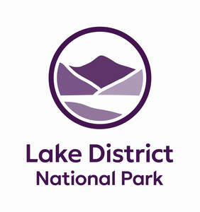

Trade Mark Journal No.2025/034 22 August 2025
UK00004238110 23 July 2025 (9,12,16,18,21,25,29,31,32,35,38,39,41,42)

- Class 9
- Recorded media; computer software; software downloadable from the Internet; downloadable electronic publications.
- Class 12
- Vehicles; apparatus for locomotion by land, air or water; motors and engines for land vehicles; vehicle body parts and transmissions.
- Class 16
- Printed matter; photographs; stationery; printed publications.
- Class 18
- Leather and imitations of leather; trunks and travelling bags; handbags, rucksacks, purses; umbrellas, parasols and walking sticks.
- Class 21
- Household or kitchen utensils and containers; combs and sponges; brushes; brush-making materials; articles for cleaning purposes; articles made of ceramics, glass, porcelain or earthenware which are not included in other classes; electric and non-electric toothbrushes.
- Class 25
- Clothing, footwear, headgear.
- Class 29
- Meat, fish, poultry and game; meat extracts; preserved, dried and cooked fruit and vegetables; jellies, jams, fruit sauces; eggs, milk and milk products; edible oils and fats; prepared meals; soups and potato crisps.
- Class 31
- Agricultural, horticultural and forestry products; seeds, natural plants and flowers; foodstuffs for animals.
- Class 32
- Beers; mineral and aerated waters; non-alcoholic drinks; fruit drinks and fruit juices; syrups for making beverages; shandy, de-alcoholised drinks, non-alcoholic beers and wines.
- Class 35
- Advertising; business management; business administration; office functions; data processing.
- Class 38
- Portal services; e-mail services.
- Class 39
- Transport; packaging and storage of goods; travel arrangement; distribution of electricity; travel information; provision of car parking facilities.
- Class 41
- Education; providing of training; cultural activities; the provision of on-line electronic publications.
- Class 42
- Design, drawing and commissioned writing for the compilation of web services.
Lake District National Park Authority
Representative: Holly Moxon